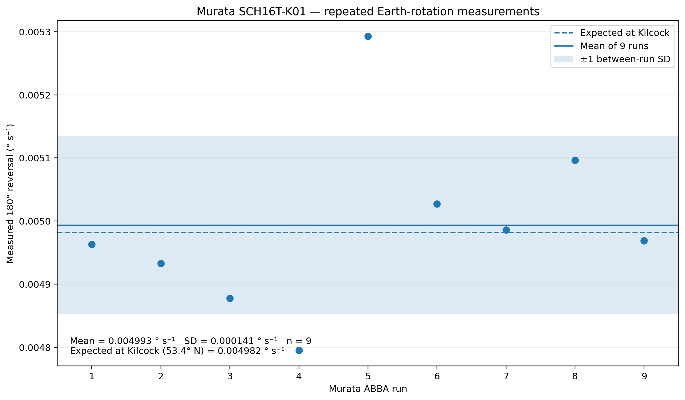
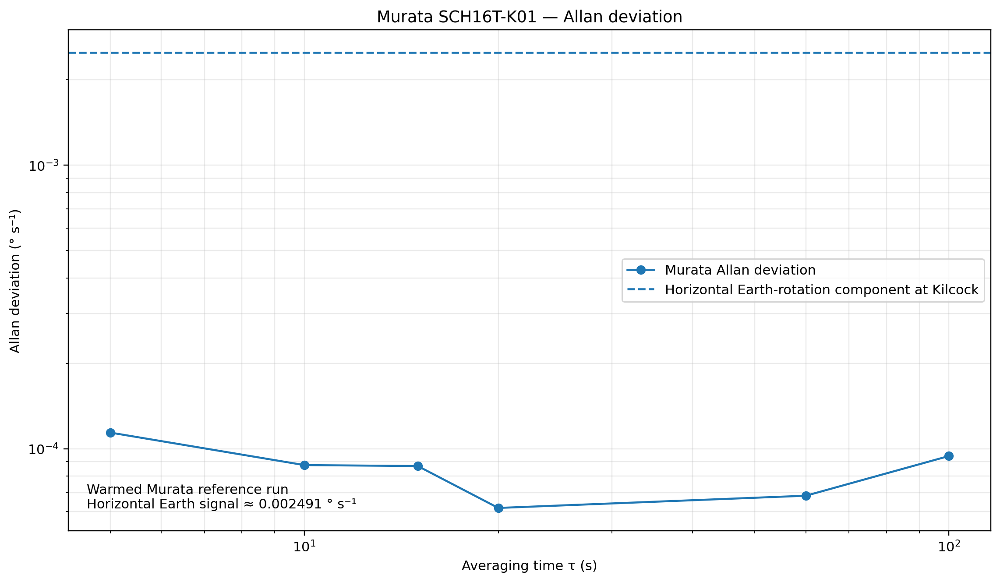

Repeated Earth-rotation measurement
Mean ± between-run sample standard deviation, n = 9.
Expected 180° reversal at Kilcock (53.4° N): approximately 0.004982°/s.
Why use the Murata?
Smartphone gyroscopes vary substantially in noise, drift and internal processing. The Murata SCH16T-K01 provides a higher-performance reference sensor, allowing the same ABBA reversal method to be tested independently of the phone's own gyroscope.
How the system works
The ESP32 reads the sensor, averages groups of five samples and sends the result to phyphox at roughly 10–11 readings per second.
Murata + ESP32 setup
The SCH16T-K01 breakout communicates with the ESP32 using SPI. The wiring diagram below is the setup used for this experiment.
Murata SCH16T-K01 / ESP32 wiring used for the Earth-rotation measurements.
Arduino requirements
The ESP32 sketch requires the SCH16T sensor library and the phyphox
Bluetooth LE library. The exact library copies used for this project
are available below. The phyphox experiment is generated by the ESP32
sketch itself, so this version does not require a separate
.phyphox file.
- ESP32 Arduino board support
smplboards_SCH16T— tested copy available belowphyphox_BLE— tested copy available belowSPI— supplied with the ESP32 Arduino core
In Arduino IDE, the two library ZIP files can be installed using Sketch → Include Library → Add .ZIP Library….
The library ZIP files are included for reproducibility. Their original licence and copyright notices should remain with the redistributed source. The project sketch is provided separately.
What does the setup cost?
The Murata sensor board is by far the main cost. The remaining parts are inexpensive and commonly available. No particular supplier is required, so the table below gives approximate costs rather than shop links.
| Part | Approx. cost | What is needed |
|---|---|---|
| Murata SCH16T-K01-PCB | €75–€100 | The reference gyroscope used for this experiment. |
| ESP32 development board | €8–€15 | A standard ESP32 board with Bluetooth LE. |
| Dupont jumper wires | €2–€5 | Suitable jumper leads for the SPI connections. |
| USB cable | €0–€5 | For programming and powering the ESP32. |
| Mount / base | €0–€10 | I used LEGO to hold the Murata board securely on a rigid base. |
| Phone running phyphox | Existing device | Used as the display, control and data-recording interface. |
I used LEGO to support the Murata board. A precision-machined mount is not required; the important points are that the sensor is held securely, its orientation is repeatable, and changes in tilt are kept small during the 180° reversal. No breadboard is required for the wiring shown above.
Components are available from major electronics distributors. Prices vary with supplier, VAT and shipping; no particular supplier is required for this project.
The ABBA reversal method
The sensor is measured in one orientation, rotated through 180°, and then returned using the symmetric sequence:
Why reverse the sensor?
A 180° reversal changes the sign of the Earth-rotation component while a constant sensor bias does not. The symmetric ABBA ordering also suppresses approximately linear drift during the sequence.

Nine Murata measurements included in the headline result. The dashed line shows the expected reversal at Kilcock, the solid line shows the mean, and the shaded band shows ±1 between-run sample standard deviation.
Repeated result
The full master dataset retains one additional complete Murata run measuring approximately 0.004056°/s. It is not included in the current nine-run headline mean. The reason for excluding that run should be stated explicitly in any final publication.
Estimate latitude from the gyroscope
For a horizontal north–south sensitive axis, the expected 180° reversal is
and therefore
Kilcock is approximately 53.4° N. The agreement of the central value is striking, although the repeatability does not justify interpreting this as kilometre-scale positioning accuracy.

Allan deviation of the warmed Murata reference run. The sensor instability over the relevant averaging times is well below the horizontal Earth-rotation component.
Sensor stability
The warmed Murata Allan-deviation measurements are approximately 0.000114°/s at 5 s, 0.000087°/s at 10–15 s and 0.000062°/s at 20 s. These values are far smaller than the horizontal Earth-rotation component at Kilcock, approximately 0.00249°/s.
Files & code
Everything needed to reproduce the Murata / ESP32 experiment is available directly from this repository. For the simplest route, download the code package and the two tested Arduino library ZIP files.
{kind=link}
Install ESP32 board support in Arduino IDE, install
smplboards_SCH16T.zip and phyphox_BLE.zip
using Add .ZIP Library…, then open
phyphoxMuRatav3.ino, select the ESP32 board and upload.
Reproducibility notes
- Location: Kilcock, Ireland, approximately 53.4° N.
- Reference sensor: Murata SCH16T-K01.
- Controller: ESP32.
- Sensor interface: SPI.
- BLE data sent to phyphox at roughly 10–11 readings per second.
- The transmitted live stream is averaged over five sensor reads.
- The exact tested SCH16T and phyphox BLE library copies are provided as ZIP files.
- Headline result: mean ± between-run sample SD for n = 9.